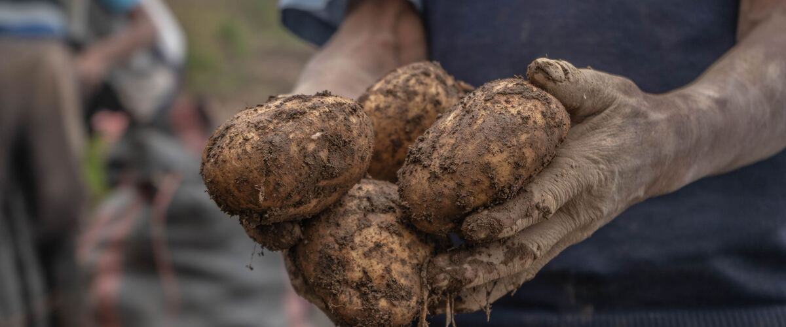

Plant guides · Oregon · Washington · Idaho
Growing Potatoes
Seed potatoes, cutting and curing them, hilling, and digging both new potatoes and keepers in Oregon, Washington and Idaho.

Potatoes are one of the most productive crops you can grow in a small space, and they like the Northwest's cool spring weather. Digging them up is like a treasure hunt, which makes them a favorite with kids. And if you've only ever eaten store-bought potatoes, a freshly dug new potato boiled with a little butter and salt is a revelation.
The Northwest knows potatoes. Idaho is famous for them, and Washington and Oregon grow huge crops too, mostly in the irrigated, sunny basins east of the Cascades. You don't need a farm, though. A single raised bed, or even a few big grow bags on a patio, can give you a surprising amount.
Early, mid or late?
Seed potato catalogs sort varieties by how long they take. Early varieties are ready in roughly 70 to 90 days and are the ones to grow for new potatoes in June and July, or where summers are short. Midseason and late varieties take longer, but give bigger yields and usually store better through winter.
Texture matters too. Yukon Gold and other yellow-fleshed potatoes are all-purpose, good boiled, roasted or mashed. Russets are dry and fluffy, the classic baker and fry potato. Red-skinned and fingerling potatoes are waxy and hold their shape in potato salad. If you have the room, plant a couple of kinds; homegrown fingerlings and colored varieties are expensive in the store.
When to plant
Potatoes go in during spring, a few weeks before the last frost, once the soil can be worked and isn't soggy. The shoots can be nipped by a late frost, but the plants usually regrow from below ground.
- Portland: Mar 15 – Apr 26. Details.
- Spokane: Apr 15 – May 27.
- Boise: Apr 1 – May 13.
- Bend: May 12 – Jun 23.
Start with certified seed potatoes
Buy certified seed potatoes from a garden center or seed company. They're grown to be free of the diseases that can build up in soil, and they haven't been treated to stop sprouting the way many grocery-store potatoes have.
Small seed potatoes can go in whole. Cut larger ones into chunks about the size of a golf ball or a bit bigger, each with at least one or two eyes (the small buds). Let the cut pieces sit for a day or two so the cut surfaces dry before planting.
Planting
- Choose a sunny spot with loose soil. Heavy, wet soil can rot seed pieces in a cold spring.
- Dig a trench about 4 inches deep.
- Set the pieces cut side down, about 12 inches apart, with rows 2 to 3 feet apart.
- Cover with soil.
Avoid adding fresh manure or lime right before planting. Both can encourage potato scab, a disease that leaves rough, corky patches on the skin.
Hilling
New potatoes form along the buried stem, above the seed piece. When plants are 6 to 8 inches tall, pull soil, compost or straw up around the stems, leaving the top few inches of leaves showing. Repeat once or twice as they grow. Hilling gives the potatoes more room to form and keeps them covered. Potatoes exposed to light turn green, and green skin should be cut away before eating.
Water regularly once plants are up, especially while they're flowering, when the tubers are forming.
When to dig
- New potatoes: start gently digging around the edges of plants a couple of weeks after they flower. Take a few and leave the rest to grow.
- Storage potatoes: wait until the vines have yellowed and died back, then leave the potatoes in the ground about two more weeks so their skins toughen. Dig on a dry day, and handle them gently.
Let storage potatoes cure in a dark, airy spot for a week or two, then store them somewhere cool, dark and humid. Around 40 to 45°F is ideal: an unheated garage or basement often works through a Northwest winter. Colder than that, as in a fridge, and potatoes slowly turn some of their starch to sugar, which makes them taste sweet and brown too much when fried. Keep them away from onions and out of the light, and check them every few weeks for any that are going soft.
Problems you might see
Late blight, the same disease that hits tomatoes, can turn potato leaves brown and slimy almost overnight in wet weather, and can spread to the tubers. If the tops get it, cut them off and bag them, wait two weeks, then dig. See late blight for how to spot it.
Scab leaves rough, corky patches on the skin. The potatoes are still fine to eat once peeled. It's worse in alkaline and dry soil, which is one reason not to lime a potato bed. Even watering while tubers form helps.
Wireworms, thin, shiny, orange-brown larvae, drill narrow holes through tubers. They're especially common in beds that were lawn in the last couple of years. If you're turning grass into a garden, plant something else there for a year or two first, and dig potatoes promptly once they're ready.
Flea beetles chew tiny holes in the leaves in early summer. Established plants usually shrug them off.
Potatoes in bags and containers
No bed space? Fabric grow bags of 10 gallons or more work well. Put a few inches of potting mix in the bottom, set two or three seed pieces on top, and cover with a few more inches. As the plants grow, add more mix to hill them, until the bag is nearly full. Water often, since bags dry out quickly. At harvest, just tip the bag out onto a tarp. It's the easiest potato digging you'll ever do, and there are no missed potatoes sprouting in the bed next year.
Rotate where you plant potatoes each year, and avoid following tomatoes, peppers or eggplant, which share some of the same diseases.